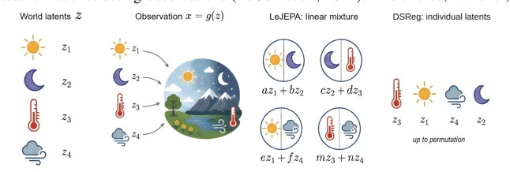
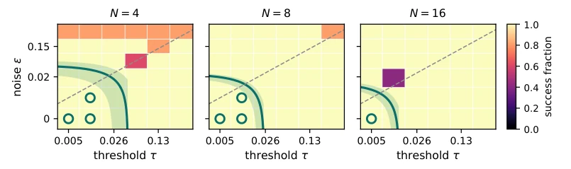
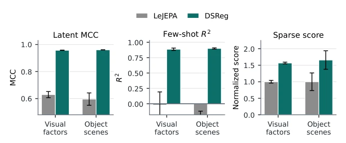
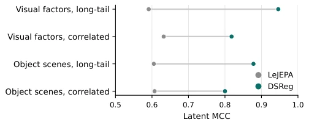
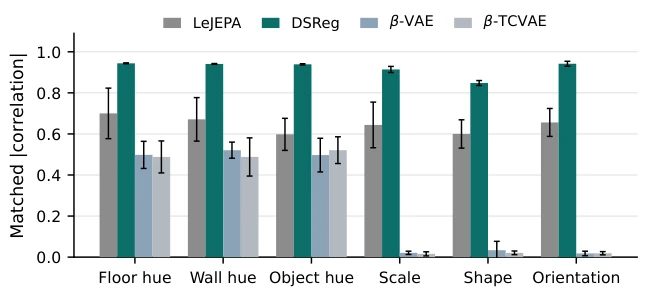
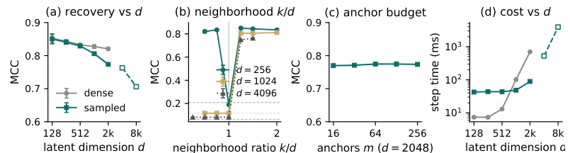
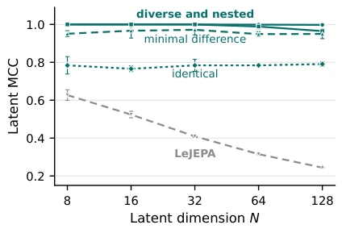
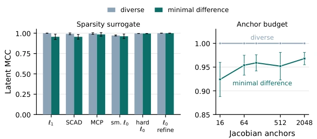
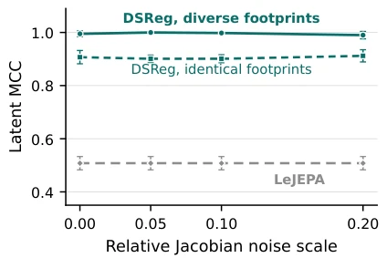

世界模型的价值在于变量能对应真实世界因素，但 JEPAs 只保证线性可识别，latent 是混合的 (Klindt et al., 2026)。这导致控制时动一个变量可能影响多个物理因素。现有可识别方法依赖重建 (nonlinear ICA, Hyvarinen & Morioka, 2016)、干预数据 (von Kugelgen et al., 2023) 或分布不对称，但 JEPAs 去掉了这些锚点。作者想解决无重建条件下的个体 latent 恢复问题。具体而言，LeJEPA 能识别线性子空间，但无法区分内部变量，就像知道球是圆的，但不知道上面画了什么图案。这对于需要精确干预的具身任务（如抓取特定物体）是致命的。现有文献中，Hyvarinen & Morioka (2016) 和 von Kugelgen et al. (2023) 都依赖额外信息，而本文试图在纯预测框架下打破这一限制。
—

Figure 1: DSReg turns a mixed latent state into individual latents. World latents z generate observations x = g(z). LeJEPA identifies the latent state up to a linear transformation, ˆz = Az, so each learned variable can remain a mixture of ground-truth latents. DSReg recovers individual latents up to signed permutation.
方法Method
整体分两步。先训练 LeJEPA 得到正交模糊的表示 (h(z)=Qz)。再用 DSReg 找旋转 R 最小化依赖雅可比矩阵的稀疏性。核心是 Structural Diversity 假设：不同 latent 对观测的影响集合不同。DSReg 通过最小化观测对候选 latent 的依赖支持集大小，把混合的 latent 解耦成 signed permutation。公式上优化 LDSReg(R) = 1/m sum ||Ba R^T||_1。不需要 decoder，直接利用观测对 latent 的依赖关系。具体流程是：1. 训练预测目标，冻结表示；2. 采样锚点，估计局部雅可比矩阵；3. 优化旋转矩阵 R 使依赖稀疏。这利用了高斯分布旋转不变性的弱点，通过观测依赖结构来打破对称性。该方法无需重建，仅依赖观测与 latent 的依赖关系，实现了从线性可识别到组件可识别的跨越。
Figure 10: Sparse access improves while dense content is unchanged. At identical dense recovery (R2 = 0.988 for both methods), the rotation transforms individual-latent recovery, few-shot readout from eight labels, and sparse editing, each moving decisively in DSReg’s favor on the MLP benchmark at N = 8.

Figure 11: Success strictly contains the guarantee. Success fraction of the thresholded criterion over the (τ, ε) grid, five seeds. Solid curve: the guarantee boundary τ + ε = σρ∗(δ∗) of Theorem 3, with seed-range shading; circled cells satisfy the guarantee for every seed, and all of them succeed. The ℓ1 rotation used throughout the paper reproduces this map on all but four of the 108 cells, again succeeding on every guaranteed cell.

Figure 13: The analytic signature survives pixel training. The gain concentrates where individual latents matter: component-wise recovery and single-latent readout improve sharply, and sparse use follows. A negative few-shot value underperforms the held-out mean; the sparse-use score is normalized so that LeJEPA sits at one. On the pixel probes, sparse control error drops from 0.63 to 0.52, five-step sparse rollout R2 rises from 0.74 to 0.81, and transition-surprise AUROC from 0.995 to 0.999 (LeJEPA / DSReg, ten runs).

Figure 14: Training imbalance does not break the rotation. Long-tail and correlated training distributions leave the recovery gain intact, with the dense span fully preserved throughout.

Figure 15: Per-factor recovery on Gaussian 3DShapes. DSReg improves every factor and alone recovers scale, shape, and orientation, where the VAE baselines collapse almost entirely.
其他图片Other Figures

Figure 6: Scaling the full estimated procedure. (a) Recovery declines gently with d; open markers are the single-GPU frontier, where anchor count shrinks to fit memory. (b) Recovery against the neighborhood ratio k/d at three scales; dashed lines mark the analytic score of an unrotated mixing, p

Figure 7: Footprint regimes across dimension. Recovery follows Structural Diversity at every dimension: diverse, nested, and minimal-difference footprints stay at ceiling while identical footprints sit at the shared- subspace level, far above the decaying baseline of the unrotated representation; the identical pair’s span is still recovered, with CCA at least 0.998 at every dimension of the full regime sweep.

Figure 8: Recovery is insensitive to the optimizer’s choices. Recovery is insensitive to the sparsity surrogate and to the anchor budget; only the minimal-difference regime rewards more anchors, exactly where the evidence is scarcest. The two rightmost bars replace the relaxation by a hard support count at τ = 0.05, minimized by coordinate search from the same six starts, and by that count used to refine the ℓ1 solution afterwards. Both series are DSReg selections, with color denoting the underlying footprint regime.

Figure 9: Corrupted Jacobians leave recovery at ceiling. Diverse footprints stay above 0.99 through noise 0.20, and identical footprints stay at their predicted shared-subspace level. Nonlinear observation rows, so Assumption 2 holds; N = 16, five seeds. LeJEPA applies no rotation, so its curve is flat by construction.